——马赛拉·哈赞
美食之美在于味道。数学之美更难以形容，但真实存在。数学也有味道，有审美，有美的概念。典型的数学审美是高雅。马赛拉·哈赞在上述引言中对这个词有完美的感受[37]。几个元素，完美混合，没有浪费，无违和感。
切尼的纸牌魔术
20世纪，哈特福特大学数学家威廉姆·菲奇·切尼设计出一个纸牌魔术，从中我们可以看到一个关于数学上的高雅的生动例子。首先，这是一个令人开心又令人费解的魔术。其次，其背后的数学运算只是让这个魔术成功。只需要有一整套足够的纸牌，整副牌里有足够的花色而已[38]。
这个魔术需要一组人才能成功实施。观众们看到的情形是这样的：一个人，我们叫她迪尔德丽，正在房间外。另一个人，我们称他为哈罗德，站在观众面前。一名观众签牌，并按自己的意愿洗几次牌，然后发给哈罗德5张牌。
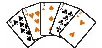
哈罗德大致看一下牌，选择一张还给观众。随后他将其他牌堆放在一张桌子上，然后从一道门离开，而迪尔德丽会从另一道门进入房间。
迪尔德丽走到房间的前面，她拿起哈罗德留下的纸牌。
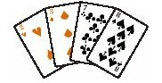
仅用几秒钟，她就当众宣布那张留给观众的纸牌是什么。
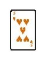
太不可思议了。
这个魔术能成功是因为哈罗德成功地向迪尔德丽发出了信号，通过他留下来的纸牌以及这些纸牌的顺序，辨识出第五张纸牌。这是高雅的数学。
魔术是这样成功的：哈罗德所看到的这五张牌中至少有两张属于同一个花色。这里有两张是红桃。哈罗德选择其中一张红桃牌还给观众。另一张红桃牌则被放在其余纸牌的最上面，而剩下的这四张牌会被他一起堆放在桌子上。因此，当迪尔德丽拿起这组纸牌时立即知道第五张牌的花色。
但是是那个花色中的哪一张牌呢？
哈罗德用其他三张牌标出不见的那张牌的牌面是多少。想象整副牌按照以下顺序排列：所有梅花（club）先排出，然后依次是方块（diamonds）、红桃（hearts），最后是黑桃（spades）（这是按照字母顺序c-d-h-s排列的）。在每组花色中，A在2的下面，2在3的下面……直到最上面的是K。换句话说：
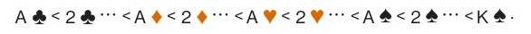
在上述示例中，我们有三张牌可以排列，7、3、8 ；（一张红桃牌在观众那里，而我们将另一张红桃牌放在其余四张牌的最上面）。这些牌正好有6种不同的排序方式
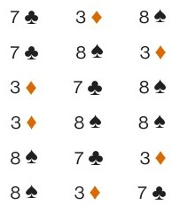
如果我们把最下面的牌想象成L（在这里就是7；
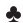
），中间的牌是M（这里是3 ；），最上面的牌是H（ ；8），这样排序就变成了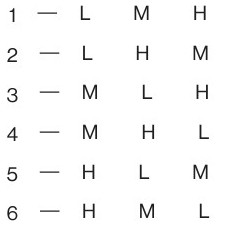
哈罗德可以用次序告诉迪尔德丽6个可能数字中的一个。迪尔德丽可以拿走第一张或者最下面的牌（是用来告知花色的那张），然后将上述序列号与纸牌牌面相加。这样她可以标示出6张不同纸牌中的一张。在我们所说的这个示例中，哈罗德留下的纸牌是
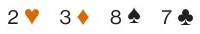
从2这张牌迪尔德丽首先知道不见的那张牌是红桃。接下来她会观察剩下的三张牌。他们的顺序是M、L、H。这种排列的序号是3，因此，迪尔德丽将3与2相加后宣布是“红桃5。”
假设迪尔德丽看到的牌是：
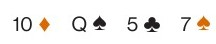
迪尔德丽知道不见的牌是方片。最后三张牌的排序是H、L、M，排序号为5。这样迪尔德丽应将5与10相加，得到15。这不属于纸牌的牌面，但是如果你将纸牌想象成一个圆圈，
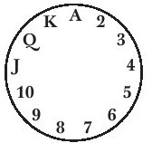
而5和10相加意味着从纸牌圆圈中10所在的位置开始顺时针走过5张牌会到达2的位置。
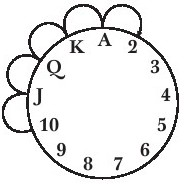
迪尔德丽就会宣布不见的那张牌是“方片2”。
然而，这有一个问题。哈罗德可以用1、2、3、4、5或者6与第一张牌相加传递信息，但是实际上第五张牌有12种可能性。例如，我们假设哈罗德抽出的牌为：
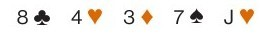
有相同花色的两张牌是红桃4和红桃J。如果哈罗德递给观众的是J ；，那他就无法向迪尔德丽传递J这一信号，因为纸牌圆圈中从4到J是7（比6大）。
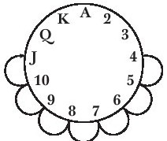
解决方案是哈罗德不会将J给观众，而是将4给观众，因为你只要加6就可以在圆圈上从J到达4。
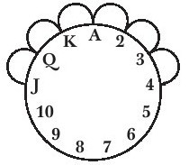
因此，哈罗德留下的是
因为7
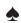
38是H、M、L，第6个排序，而纸牌圆圈上J+6=4。你看出这有多高雅了吗？由于5张牌中会有2张是相同花色，再多一种花色这个魔术就无法成功。
这两张牌中，其中一张在纸牌圆圈中先于另一张6个或小于6个牌位。花色中再多一张牌这个魔术也无法成功！
高雅与魔术之间的距离很短。高雅的数学使高雅的魔术效果成真，这是最值得欣赏的。
弗莱德的烤芝士三明治
本章开篇引用的话摘自哈赞的西蓝花汤食谱。她还写道：
变白的西蓝花用橄榄油与大蒜一起清炒。菜茎被放在一边，但茎秆与它们的油融成浓浆，再加入肉汤和鸡蛋麦粒。西蓝花变白产生的水将浓汤稀释。意大利面煮熟时，下入菜茎，这道汤就好了。菜茎的柔和，意大利面的韧性，因为油而芳香可口的优质肉汤以及微有蒜味的浓汤茎秆都敏捷地各入其位。是否还有比“高雅”更好的词来形容呢，我是想不出的。
另外一个我称其为高雅的食谱是我儿子的烤芝士三明治。在我对他的方法进行解说前，请允许我列出他这个三明治的绝妙特点：
·一个优质的烤芝士三明治应该是脆脆的。这个三明治就是脆脆的。
·但是用油烤三明治会使它太油腻。这个三明治不油腻。
·有时脆脆的烤芝士三明治会在你食用的时候划破你的牙龈。吃这个三明治不会发生这样的事，因为它很柔软。
柔软？你刚刚还说这个三明治脆脆的！
·它是脆脆的，也很柔软。真是令人惊叹。
·烤过的面包比较美味，奶酪也是这样。但是标准的烤芝士三明治里的奶酪是没有烤过的，而这个三明治中的奶酪是烤过的。
好了，这就是魔法所在：
弗莱德的内烤芝士三明治（2个三明治）
4片面包
做两个三明治用的芝士烤面包机
像这样将芝士和面包片放在烤面包机中（两片面包叠放，一层芝士）：
然后将烤面包机打开，开始烤面包，直到面包呈现出你想要的焦糊颜色，或者芝士烤成你想要的状态，无论面包和芝士哪一个先烤好。
外层的都会烤好，
但是内层是软的。
然后只是简单地调换一下上下层面包的位置，芝士三明治就做好了。[39]
数学家们认为高雅是数学特有的一种美，其实这种美是具有普遍性的。一道菜以数学的感官看也可以是高雅的。
但是关于美我们到此为止。现在该说说有用性了。